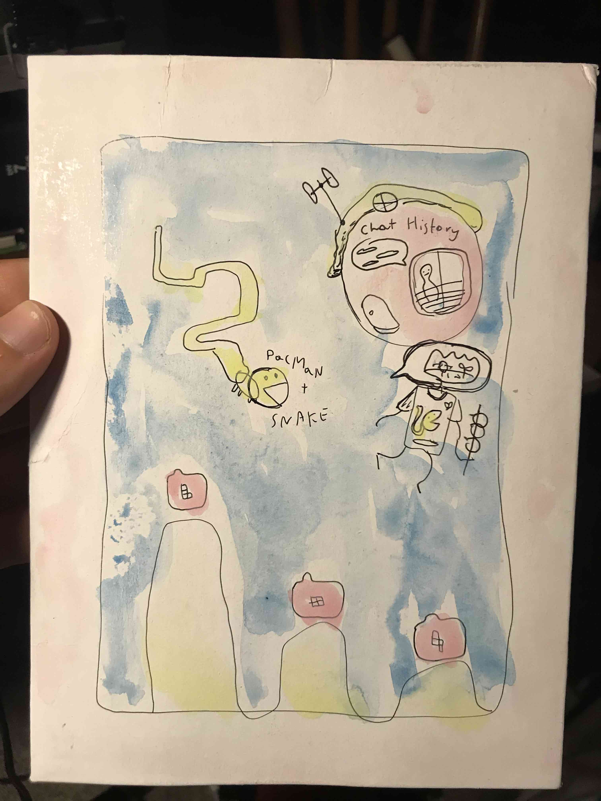

I've had quiet an interesting day. With lots of ups and downs.
The day started out with me waking up from bing smoking and watching youtube lateinto the night last night. So I only got about 6 hours of sleep. Lately I have been taking my Honda CRV to work everyday and just using it to get around. I was starting to feel pretty negative from not being able to walk and just sitting in my car. Its often too hot. It feels lonely sometimes. Just driving it and staring at traffic makes me sadder. On top of it I am depriving my self of the joys of walking places. I really missed that. So starting now I have going to put in more effort to walk and bus to work. More effort fuck that. I am going to do. I will only take the car if I am running Late, or plan to drive places afterwards.
I was getting quiet bored with the selfish gene. I think because I stoped reading it a few months back and Then I lost track of where I was and needed to referesh my context so I just started rereading the last few chapters I read. It got boring. And also Ontop of it. I feel like I am taking a lecture when I Read that book. Which sometimes is just want I want. Both lately Its not something I can get lost in. So I went to powells and Picked up 2 Calvino books. Mr Palomar. $6 and Marcovaldo. I took the books to The japanese garden but It was not much of a reading atmosphere. So I mostly enjoyed its beauty. I floundered A bit on my tasks today. At noon I took an exteneded Lunch and Saw Appolo 11. It was kind of boring to be honest. But it was cool to see a movie for free on my lunch break.
I walked a bunch today. In the AM to bus and work. Then at the Japanese Garden and then i walked to powells from the garden. Cool. Then I rested by reading Marcovaldo. Its pretty good but not as pleasent as the other too. Although it does remind me of my life downtown and my current and passed struggles with poverty and just trying to get by. I really love how slice of life it is. I oreded a vegan sandwich at powells for $7. It was okay. But I did really enjoy spending like 2-3 hours reading in the coffee shop.
I took the 19 all the way home at around 11pm and reflected on the day. It was a beautiful city view and climb up the hills to get home. Once I arrived I felt a surge of goodness and power. Maybe I should be walking a lot more!!! It is summer after all and
But essentially Things are going good-ish. I overcame a lot of negative emotions. Got exercise and now at 3am I feel pretty good about the state of things.
